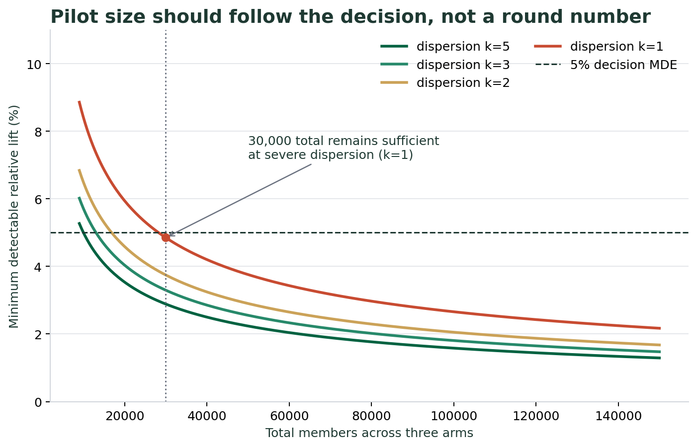
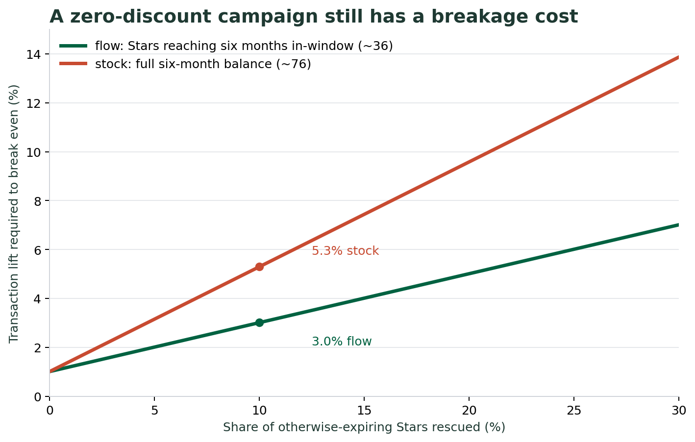
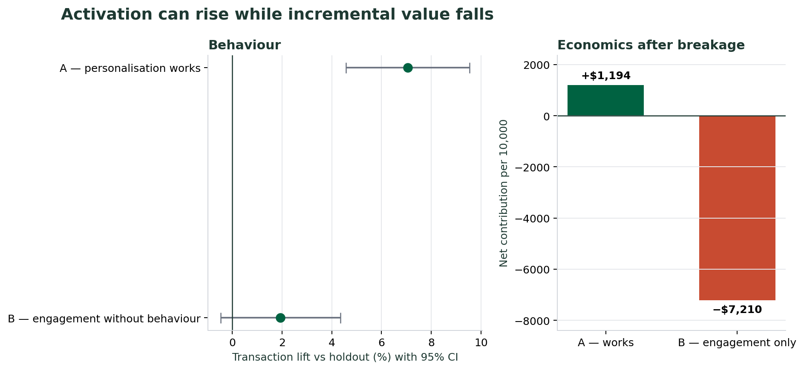
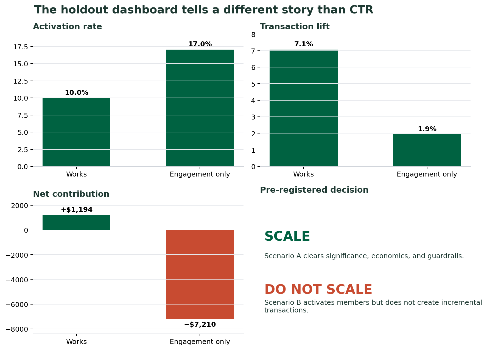

Marketing analytics · Independent case study
Growing profitable frequency among low-frequency Starbucks Rewards members — without a discount.
The finding
On 10 March 2026 Starbucks relaunched Rewards with three tiers. Buried in the terms is a rule that applies only to the entry tier:
Green members' Stars expire six months after the month they were earned — but can be extended by one month, indefinitely, with a single qualifying purchase, redemption, or $30+ digital reload. Gold and Reserve Stars never expire.
Benchmarked against Dunkin', McDonald's, Dutch Bros and Panera, that is the only conditionally renewable expiry rule in the category — functionally the most forgiving policy any of them offers. It is also invisible unless you read the terms, which is precisely what the lowest-frequency members are least likely to do.
Best-in-category benefit. Hypothesised worst-in-category awareness. That gap is the campaign.
So the proposal is not another offer. It is a personalised reminder that costs nothing to give:
You have 85 Stars. They start expiring on 31 March. That's your usual Grande Vanilla Latte, on us. Any visit this month keeps them.
The question
Menu, pricing, throughput, seasonality and the loyalty relaunch all moved together. Without a holdout, none of that lift can be attributed to the program — and an attribution error does not stay small. It compounds every time the company scales what it believes worked.
Five months after the relaunch, how much of the change in low-frequency Green member behaviour is genuinely incremental — and can it be grown profitably without further discounting?
Design

The outcome is a count and an over-dispersed one, so variance is modelled as negative binomial rather than Poisson. Dispersion cannot be known without internal data, so every result is reported across a range. Two primary comparisons are planned, so α is Bonferroni-corrected to 0.025.
Surplus power is not free. Every extra member sitting in a holdout is forgone revenue — which is exactly why the calculation is worth running before the test rather than after.
Economics
| Activation | Net at 5% lift | Net at 10% lift |
|---|---|---|
| 5% | +$262 | +$4,725 |
| 10% | −$3,937 | +$525 |
| 20% | −$12,337 | −$7,875 |
Per 10,000 members over 12 weeks, a $2-off campaign is profitable only when few people use it. The marketing definition of success — high activation — is the financial definition of failure.
That is the argument for a mechanic with no incremental incentive at all.
The cost nobody budgets for

Under standard loyalty accounting, unredeemed Stars sit as deferred revenue and are recognised as revenue when they expire — breakage. A campaign that stops Stars from expiring converts recognised revenue back into an obligation to serve. That cost never appears on a marketing budget, which is exactly why it gets missed.
The ≈5% target uses the conservative stock pool. At 10% breakage rescue, breakeven is 5.3% if the member's full six-month Star balance (~76 Stars) is exposed; the operationally narrower flow pool (~36 Stars reaching expiry in-window) breaks even at 3.0%.
Results

Two scenarios are simulated from known parameters. The second is the one worth reading, because a framework that only demonstrates its own success is a brochure.
The decision rule catches scenario B. A click-through dashboard would have called it a win.

That gap is the entire argument for holdout-based measurement, and it is why the primary metric is incremental contribution margin rather than any engagement metric.
Method
| File | What it does |
|---|---|
assumptions.py | Single source of truth. Every value carries an evidence label — public fact, case assumption, proposed target, or calculated. |
power.py | Sample size and MDE for an over-dispersed count outcome, Bonferroni-corrected. |
economics.py | Breakeven, the breakage model, and the discount comparison. |
simulate.py | Three-arm simulation and the pre-registered decision machinery. |
01_experiment_design.ipynb | The full walkthrough, executed end to end. |
Simulations are seeded to the program relaunch date, so every figure reproduces exactly.